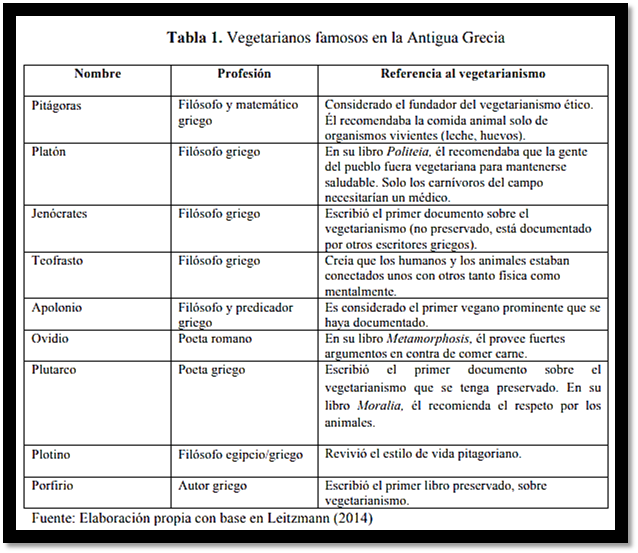

¿Como surge el veganismo?
Orígenes del veganismo
En las primeras civilizaciones, las costumbres de la alimentación fueron a base de plantas. La mayoría de las religiones como el Hinduismo y el Budismo recomendaban un estilo de vida vegetariano. Las primeras informaciones de la nutrición vegetariana datan del siglo sexto antes de Cristo. Pitágoras es considerado el padre del vegetarianismo ético. El estilo de vida 12 “pitagoriano” fue adoptado por numerosos y prominentes filósofos y escritores clásicos.
El término vegano fue acuñado por Donald Watson (1910-2005) en el primer número de Vegan News, en el año 1944, en donde justamente se diferencia de forma clara el vegetarianismo del veganismo, siendo el primero, en muchos casos, solo una dieta: un vegetariano es aquel que se abstiene de comer animales, pero generalmente sólo por motivaciones de salud o ecológicas, sin llevar necesariamente su decisión a otras instancias de consumo, como para que su dieta pueda convertirse en un estilo de vida basado en la ética
Donald Watson creo el 1 de noviembre de 1944 la Vegan Society en Reino Unido. En el año 1944, se cumplieron 50 años de la creación de dicha fundación. Desde ese día hasta hoy cada 1 de diciembre se celebra el Día Mundial del Veganismo. |
|  |
Vegan Society ha adoptado una serie de puntos revisados y ampliados, los cuales, entre otras cosas.
El movimiento vegano se compromete a sí mismo en la búsqueda del objetivo de acabar con la utilización de animales para alimentación, recursos, trabajo, caza, experimentación, y todos los demás usos que implican la explotación de la vida animal por parte del hombre. |
Pueden ser miembros de la Asociación todos aquellos que deseen compartir nuestro objetivo y traten de vivir lo más cerca de este ideal hasta donde sus circunstancias personales se lo permitan. Un miembro de esta comunidad no hace una promesa pero sí declara estar de acuerdo con el objetivo. La puerta está abierta y organización da la bienvenida a todos aquellos que se sientan capaces de apoyarla. La direción y la administración del trabajo de la organización recae en la labor de sus miembros |
El sentido de esta iniciativa es hacer del veganismo algo único entre los movimientos relacionados con el bienestar animal. Por ese motivo se ha materializado en una totalidad y no, como los otros movimientos, en una abstracción. Cuando los otros movimientos se ocupan de sectores determinados —y por tanto van directamente a las prácticas más que a los principios— el veganismo es en sí mismo un principio, del cual se derivan de manera lógica ciertas prácticas. |
Si, por ejemplo, el principio del veganismo es aplicado a la dieta, entonces esta no debe contener ningún alimento derivado de animales. Alguien podría adoptar este tipo de dieta por una variedad de motivos: humanitarios, de salud, o por gusto. Pero entonces se haría por una cuestión personal que podría cambiar. El veganismo, sin embargo, es un principio —de que el hombre no tiene derecho a explotar a los animales para sus propios fines— que no cambia. La dieta vegana se compone, por tanto, de frutos, semillas, verduras, y otros productos que no provengan de animales, y excluye los cadáveres, los huevos, la miel, la leche animal y sus derivados. |
En un mundo vegano, los demás animales serían reintegrados en el equilibrio y la salud de la naturaleza tal y como es en sí misma. De este modo, un gran error histórico, cuyo efecto debe de haber sido tremendo sobre el curso de la evolución, sería corregido. La idea de que nuestros hermanos animales pueden ser usados por el hombre para su propio provecho será tan extraña para el pensamiento hasta ser casi impensable. Bajo este prisma, el veganismo no significa tanto bienestar sino liberación, para los animales y para la mente y el corazón del hombre; ya que no se trata de hacer la presente relación más soportable sino de reconocer que esta es una relación entre amo y esclavo, la cual debe ser abolida antes de que algo mejor y más adecuado pueda ser construido.
El veganismo es en verdad la afirmación de que en donde haya amor la explotación debe desaparecer. Este pensamiento tiene su continuidad histórica con el movimiento que buscaba la liberar a los esclavos humanos. Al ponerlo en práctica, cualquier error fundamental cometido por el hombre contra los animales debe inmediatamente desaparecer. Su esencia está en el poder de la compasión; la máxima expresión de amor de que el hombre es capaz. Algo que se da sin esperar obtener nada a cambio. Y al mismo tiempo que se liberaría a sí misma de otros muchos perjuicios surgidos del peor aspecto de su propia naturaleza, el beneficio que la humanidad pudiera obtener sería incalculable.
|